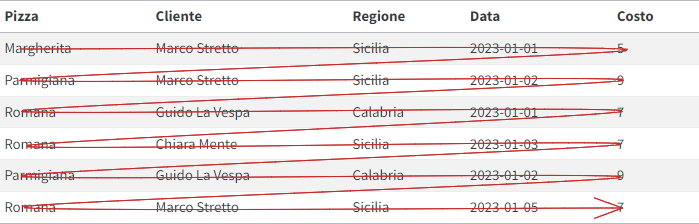
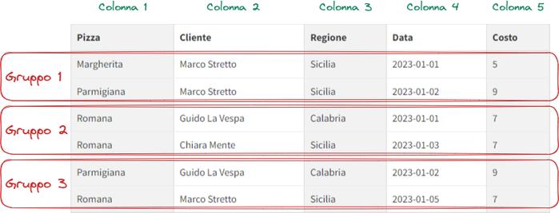
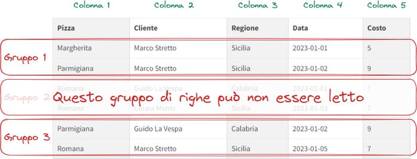
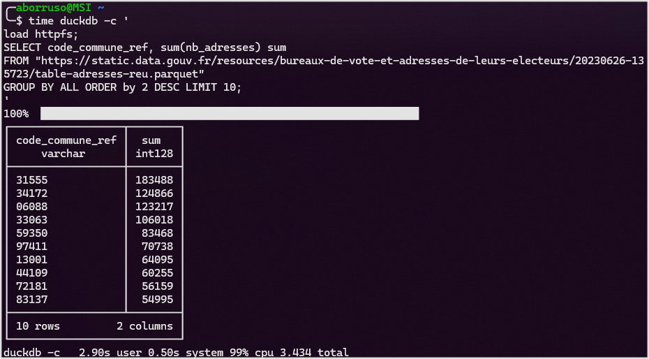
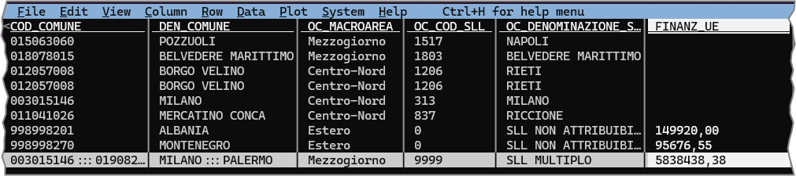
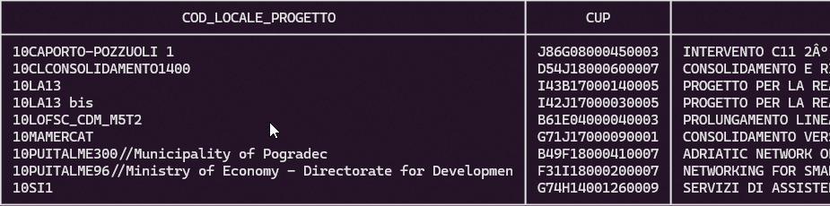
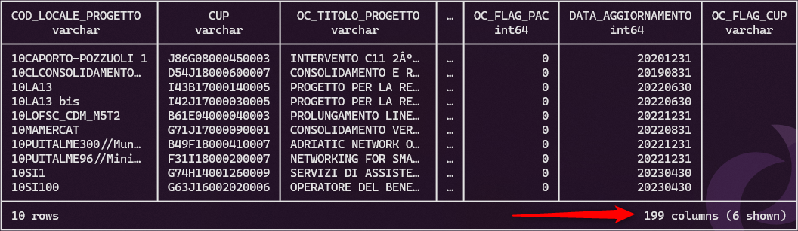

pnrrdb = DuckDBClient.of({
progetti: FileAttachment("file/PNRR_Progetti-Universo_REGIS_v2.1.parquet")
})
Prima di continuare a leggere
In questo post si parla dei dati in formato CSV di OpenCoesione. Ha suscitato il loro interesse e ci siamo confrontati sull’opportunità di pubblicare i loro dati anche in 21 febbraio 2024.
🏅 Ebbene, dal 22 febbraio 2024 hanno pubblicato i loro dati in questo formato. I dettagli e un lungo tutorial in questo post.
TL;DR (una breve introduzione)
Il formato CSV, con tutti i suoi difetti, è ancora uno dei formati più diffusi per lo scambio di dati. Ci sono modalità di gestire questi file ed eccezionali strumenti, che possono rendere molto semplice, efficace e rapido il loro utilizzo. Anche quando sono di grandi dimensioni.
E per fortuna ci sono banche dati “grosse” e importanti come OpenCoesione che danno l’opportunità di fare pratica con questi strumenti.
In questo lungo post farò una carrellata della compressione dei file CSV, dell’importanza di descriverli, dell’utilizzo di DuckDB per analizzarli e del formato Parquet come alternativa al CSV.
⚠️ QUESTO POST NON È UN TUTORIAL (ma doping omeopatico per i tuoi criceti e per chi pubblica dati).
I CSV sono brutti e cattivi
Il formato CSV è uno dei formati più diffusi per lo scambio di dati. È un formato testuale, che può essere letto e scritto da quasi tutti i linguaggi di programmazione e da quasi tutti gli strumenti di analisi dati (i “quasi” si potrebbero levare).
Non è consigliabile utilizzarlo come formato di lavoro, perché le operazioni di lettura e scrittura sono lente e costose in termini di risorse (tempo e memoria) e perché è in generale un formato “povero”.
Un file CSV è “brutto e cattivo” ad esempio per queste ragioni:
- non consente di definire il tipo di campo (stringa, numero, data, ecc.). Tipicamente si è costretti a fare l’inferenza, che può essere errata;
- non consente di definire il separatore di campo (virgola, punto e virgola, tabulazione, ecc.). Si può fare l’inferenza e/o si può leggere (e si possono fare errori);
- non consente di definire il separatore dei decimali (virgola, punto, ecc.). Si può fare l’inferenza e/o si può leggere (e si possono fare errori);
- non consente di definire l’encoding (UTF-8, ISO-8859-1, ecc.). Tipicamente si è costretti a fare l’inferenza, che può essere errata.
E per questo chi pubblica dati in questo formato, dovrebbe a maggior forza descriverli con dei metadati. Ma purtroppo nella gran parte dei casi, non ci resta che “morire di inferenza”.
E si potrebbero aggiungere altre brutture sul formato e di come spesso viene reso disponibile. Ma non è il tema del post.
Compressione dei file CSV
Molti siti che pubblicano file CSV - specie quando sono “grandi” - li pubblicano in formato compresso.
Questo - come nel caso del file dei progetti di OpenCoesione - è un ottimo modo per ridurre il tempo di download: il file reso disponibile in formato compresso ZIP pesa circa (nella versione di aprile 2023) 240 MB, mentre il file CSV contenuto al suo interno pesa circa 4,4 GB.
Scegliendo un altro formato di compressione, diverso dallo ZIP, si possono dare ulteriori vantaggi a chi utilizzerà il file.
Uno è quello di renderlo subito pronto all’uso, come se fosse già decompresso. Che è una cosa molto comoda specie nelle prime fasi di lavoro “esplorative”, in cui si fanno un po’ di “ispezioni”, le prime prove di analisi, di verifica qualità, di adeguatezza dei dati, ecc..
Formato GZIP
È un formato introdotto nel 1992, che ha una buona compressione e che è veloce da decomprimere. È un formato lossless, non perde informazioni, e streaming, può essere decompresso man mano che i dati sono letti, senza dover attendere il completamento dell’estrazione dell’intero archivio.
La gran parte delle applicazioni e linguaggi di scripting sono in grado di accedere nativamente a un file gz; un po’ meno con il formato zip. Ed è compatibile con tutti i sistemi operativi e tutte le utility di compressione e decompressione.
A seguire alcuni esempi di quanto è pronto all’uso, basati sul CSV dei Progetti del PNRR, compresso da me in formato gz.
Ambiente di lavoro utilizzato
La gran parte degli esempi di comandi e di codice inseriti in questo articolo, sono pensati per essere eseguiti in ambiente Linux. Sono replicabili quindi in quasi tutti i sistemi operativi - compresi Mac e Windows - perché Linux o è disponibile “nativamente”, o lo è installando applicativi (su Windows ad esempio Windows Subsystem for Linux, WSL).
Lo posso esplorare con l’utility zcat, che “stampa” sulla shell il contenuto del file gz:
zcat PNRR_Progetti-Universo_REGIS_v2.1.csv.gz | head -n 5head estrae le prime 5 righe.
Mi verrà restituito l’output di Lista 1, e potrò constatare che c’è una riga di intestazione (non è obbligatoria nei CSV), che il separatore di campo è il ;, che il separatore dei decimali è la , e soprattutto farmi un’idea dei contenuti.
Programma;Missione;Descrizione Missione;Componente;Descrizione Componente;ID Misura;Codice Univoco Misura;Descrizione Misura;ID Submisura;Codice CID;Codice Univoco Submisura;Descrizione Submisura;Amministrazione Titolare;Codice Identificativo Procedura di Attivazione;Titolo Procedura;Tipologia Procedura di Attivazione;CUP;Codice Locale Progetto;Stato CUP;CUP Codice Natura;CUP Descrizione Natura;CUP Codice Tipologia;CUP Descrizione Tipologia;CUP Codice Settore;CUP Descrizione Settore;CUP Codice Sottosettore;CUP Descrizione Sottosettore;CUP Codice Categoria;CUP Descrizione Categoria;Titolo Progetto;Sintesi Progetto;Descrizione Tipo Aiuto;Finanziamento - Stato;Finanziamento Stato - FOI;Finanziamento UE (Diverso da PNRR);Finanziamento Regione;Finanziamento Provincia;Finanziamento Comune;Finanziamento Altro Pubblico;Finanziamento Privato;Finanziamento Da Reperire;Finanziamento PNRR;Finanziamento PNC;Altri Fondi;Finanziamento Totale;Finanziamento Totale Pubblico;Finanziamento Totale Pubblico Netto;Soggetto Attuatore;Codice Fiscale Soggetto Attuatore;Flag Progetti in Essere;Data di Estrazione
PNRR;M1;Digitalizzazione, innovazione, competitività e cultura;M1C1;Digitalizzazione, innovazione e sicurezza nella PA;M1C1I1.2;M1C1I1.02;Abilitazione al cloud per le PA locali;M1C1I1.2;M1C1I1.2;M1C1I1.02.00;Abilitazione al cloud per le PA locali;PCM - DIPARTIM. TRASFORMAZIONE DIGITALE;1000000237;AVVISO AB. CLOUD COMUNI DEL 15/04/22;Bando;G61C22000240006;G61C22000240006;Attivo;02;ACQUISTO O REALIZZAZIONE DI SERVIZI;19;APPLICATIVI E PIATTAFORME WEB;10;SERVIZI PER LA P.A. E PER LA COLLETTIVITA';01;SERVIZI E TECNOLOGIE PER L'INFORMAZIONE E LE COMUNICAZIONI;007;SISTEMI INFORMATIVI PER LA P.A.;1.2. Ab.Cloud Com Cosoleto;MIGRAZIONE AL CLOUD DEI SERVIZI DIGITALI DELL'AMMINISTRAZIONE*TERRITORIO COMUNALE*N. 9 SERVIZI;INTERVENTO CHE NON COSTITUISCE AIUTO DI STATO;0,00;0,00;0,00;0,00;0,00;0,00;0,00;0,00;0,00;47427,00;0,00;0,00;47427,00;47427,00;47427,00;COMUNE DI COSOLETO;01234470803;No;13/06/2023
PNRR;M1;Digitalizzazione, innovazione, competitività e cultura;M1C1;Digitalizzazione, innovazione e sicurezza nella PA;M1C1I1.2;M1C1I1.02;Abilitazione al cloud per le PA locali;M1C1I1.2;M1C1I1.2;M1C1I1.02.00;Abilitazione al cloud per le PA locali;PCM - DIPARTIM. TRASFORMAZIONE DIGITALE;1000000237;AVVISO AB. CLOUD COMUNI DEL 15/04/22;Bando;F71C22000160006;F71C22000160006;Attivo;02;ACQUISTO O REALIZZAZIONE DI SERVIZI;19;APPLICATIVI E PIATTAFORME WEB;10;SERVIZI PER LA P.A. E PER LA COLLETTIVITA';01;SERVIZI E TECNOLOGIE PER L'INFORMAZIONE E LE COMUNICAZIONI;007;SISTEMI INFORMATIVI PER LA P.A.;1.2. Ab.Cloud Com Bompensiere;MIGRAZIONE AL CLOUD DEI SERVIZI DIGITALI DELL'AMMINISTRAZIONE*TERRITORIO COMUNALE*N. 9 SERVIZI DA MIGRARE;INTERVENTO CHE NON COSTITUISCE AIUTO DI STATO;0,00;0,00;0,00;0,00;0,00;0,00;0,00;0,00;0,00;47427,00;0,00;0,00;47427,00;47427,00;47427,00;COMUNE DI BOMPENSIERE;80005060852;No;13/06/2023
PNRR;M1;Digitalizzazione, innovazione, competitività e cultura;M1C1;Digitalizzazione, innovazione e sicurezza nella PA;M1C1I1.2;M1C1I1.02;Abilitazione al cloud per le PA locali;M1C1I1.2;M1C1I1.2;M1C1I1.02.00;Abilitazione al cloud per le PA locali;PCM - DIPARTIM. TRASFORMAZIONE DIGITALE;1000000237;AVVISO AB. CLOUD COMUNI DEL 15/04/22;Bando;B61C22000190006;B61C22000190006;Attivo;02;ACQUISTO O REALIZZAZIONE DI SERVIZI;19;APPLICATIVI E PIATTAFORME WEB;10;SERVIZI PER LA P.A. E PER LA COLLETTIVITA';01;SERVIZI E TECNOLOGIE PER L'INFORMAZIONE E LE COMUNICAZIONI;007;SISTEMI INFORMATIVI PER LA P.A.;1.2. Ab.Cloud Com Castelgrande;MIGRAZIONE AL CLOUD DEI SERVIZI DIGITALI DELL'AMMINISTRAZIONE*TERRITORIO COMUNALE*9 SERVIZI DA MIGRARE;INTERVENTO CHE NON COSTITUISCE AIUTO DI STATO;0,00;0,00;0,00;0,00;0,00;0,00;0,00;0,00;0,00;47427,00;0,00;0,00;47427,00;47427,00;47427,00;COMUNE DI CASTELGRANDE;80004060762;No;13/06/2023
PNRR;M1;Digitalizzazione, innovazione, competitività e cultura;M1C1;Digitalizzazione, innovazione e sicurezza nella PA;M1C1I1.2;M1C1I1.02;Abilitazione al cloud per le PA locali;M1C1I1.2;M1C1I1.2;M1C1I1.02.00;Abilitazione al cloud per le PA locali;PCM - DIPARTIM. TRASFORMAZIONE DIGITALE;1000000237;AVVISO AB. CLOUD COMUNI DEL 15/04/22;Bando;F31C22000020006;F31C22000020006;Attivo;02;ACQUISTO O REALIZZAZIONE DI SERVIZI;19;APPLICATIVI E PIATTAFORME WEB;10;SERVIZI PER LA P.A. E PER LA COLLETTIVITA';01;SERVIZI E TECNOLOGIE PER L'INFORMAZIONE E LE COMUNICAZIONI;007;SISTEMI INFORMATIVI PER LA P.A.;1.2. Ab.Cloud Com Ittireddu;MIGRAZIONE AL CLOUD DEI SERVIZI DIGITALI DELL'AMMINISTRAZIONE*TERRITORIO COMUNALE*N. 9 SERVIZI DA MIGRARE;INTERVENTO CHE NON COSTITUISCE AIUTO DI STATO;0,00;0,00;0,00;0,00;0,00;0,00;0,00;0,00;0,00;47427,00;0,00;0,00;47427,00;47427,00;47427,00;COMUNE DI ITTIREDDU;00283910909;No;13/06/2023E posso usare in modo diretto strumenti di analisi, trasformazione e filtro di file CSV come lo straordinario Miller.
Ad esempio avere restituito il conteggio dei record, i valori nulli di ogni campo e anche i valori distinti.
Se voglio farlo soltanto per i campi Missione, Codice Univoco Misura e CUP Codice Natura, utilizzerò il verbo cut e summary, direttamente sul file compresso:
mlr --csv --ifs ";" \
cut -f Missione,"Codice Univoco Misura","CUP Codice Natura" then \
summary -a count,null_count,distinct_count PNRR_Progetti-Universo_REGIS_v2.1.csv.gzIn output avrò:
summary di Miller
| field_name | count | null_count | distinct_count |
|---|---|---|---|
| Missione | 197546 | 0 | 6 |
| Codice Univoco Misura | 197546 | 0 | 109 |
| CUP Codice Natura | 197546 | 17683 | 7 |
E con questo file compresso potrò usare anche strumenti di analisi e trasformazione che mi consentono di eseguire una più “standard” query SQL, come DuckDB.
Per avere il totale del finanziamento PNRR per ogni missione, posso usare questo comando:
duckdb -csv -c '
SELECT Missione, SUM("Finanziamento PNRR") AS total_PNRR
FROM read_csv_auto("PNRR_Progetti-Universo_REGIS_v2.1.csv.gz")
GROUP BY Missione
'
Informazioni utili
Il parametro -csv è per avere l’output del comando in formato CSV, mentre -c per definire la query SQL.
Il FROM ha come input direttamente il file CSV compresso, letto tramite la funzione read_csv_auto di DuckDB.
Nota bene: la query di sopra non ti funzionerà.
Perché purtroppo “i CSV sono brutti e cattivi” e senza conoscere il separatore dei campi, il separatore dei decimali, i tipi di campo, sapere se c’è o no la riga di intestazione, ecc., è difficile riuscire a interrogare un CSV, anche con DuckDB.
Per questo motivo è molto raccomandato a chi rende disponibili file CSV:
- pubblicare CSV standard;
- descriverli.
Sono essenziali allo scopo, le operazioni di esplorazione descritte sopra.
E allora è meglio (a volte necessario) aggiungere un po’ di parametri al comando precedente (vedi Lista 2): per fare in modo che le colonne possano essere correttamente distinte (fissando con il parametro delim il separatore dei campi), che siano mappati i nomi dei campi (fissando il parametro header), che i numeri decimali siano elaborabili come tali (fissando il parametro decimal_separator e specificando il tipo FLOAT per il campo Finanziamento PNRR).
delim e header sono riconosciuti automaticamente da DuckDB. Sono inseriti a scopo didattico.
duckdb -csv -c '
SELECT Missione, SUM("Finanziamento PNRR") AS total_PNRR
FROM read_csv_auto(
"PNRR_Progetti-Universo_REGIS_v2.1.csv.gz",
delim=";",
decimal_separator=",",
header=True,
types={"Finanziamento PNRR":"FLOAT"}
)
GROUP BY Missione
'- imposta il separatore di campi a
; - imposta il separatore di decimali a
, - la prima riga è la riga di intestazione
- il campo
Finanziamento PNRRè di tipoFLOAT
Il vantaggio di un CSV standard
Con un CSV standard, questi parametri aggiuntivi non sarebbero necessari e si potrebbe usare la prima versione della query SQL.
In output, in mezzo secondo (di fatto, non per dire “in breve tempo”), queste righe di output (per un CSV di circa 200.000 righe per 50 colonne, che è pure compresso):
| Missione | total_PNRR |
|---|---|
| M1 | 19245334466.82313 |
| M2 | 22688516407.240803 |
| M3 | 22563735313.390625 |
| M4 | 20129269029.00844 |
| M5 | 12998257338.579052 |
| M6 | 8059988416.008047 |
Formato ZSTD
Si può scegliere un algoritmo di compressione alternativo allo ZIP, anche per ragioni di velocità di decompressione e compressione e per la percentuale di compressione.
Per questa accoppiata di caratteristiche il formato ZSTD è sempre più diffuso tra le applicazioni e le librerie software di accesso ai dati.
Per dare qualche numero di confronto, basato sul file CSV da 4 GB di OpenCoesione e sul mio notebook con Pentium i7 di 12esima generazione con 16 GB di RAM:
- la compressione (standard) con
gziprichiede 47 secondi, e il file compresso di output pesa 253 MB; - la compressione (standard) con
zstdrichiede 13 secondi, e il file compresso di output pesa 186 MB; - la decompressione del file
gziprichiede 19 secondi; - la decompressione del file
zstdrichiede 5 secondi.
L’utility a riga di comando per gestire i file ZSTD si chiama zstd e si può installare in (quasi) tutti i sistemi operativi. Un’applicazione open source, multipiattaforma, con interfaccia grafica, che supporta questa compressione è PeaZip.
Molte applicazioni e librerie software di accesso ai dati, come DuckDB, Apache Arrow e Apache Spark, lo supportano nativamente.
In DuckDB, si può leggere un file CSV compresso in formato ZSTD, semplicemente puntando ad esso (l’estensione .zst fa in modo che venga interpretato come file compresso in formato ZSTD):
duckdb -csv -c '
SELECT count(*) numero_righe
FROM read_csv_auto(
"PNRR_Progetti-Universo_REGIS_v2.1.csv.zst",
delim=";",
decimal_separator=",",
header=True,
types={"Finanziamento PNRR":"FLOAT"}
)
'
File di esempio
Qui un file compresso ZSTD da usare come esempio.
Restituisce il numero di righe in circa 0,4 secondi per il CSV (compresso ZSTD) di circa 200.000 righe per 50 colonne, usato nell’esempio di sopra. E in 5 secondi per il CSV (compresso ZSTD) di circa 2.000.000 di righe per 200 colonne di OpenCoesione.
Si può esplorare analogamente un file CSV compresso ZSTD, “stampandolo” a schermo, con l’utility zstdcat. Per leggere le prime 5 righe del file:
zstdcat PNRR_Progetti-Universo_REGIS_v2.1.csv.zst | head -n 5O sempre in accoppiata con Miller, per avere dei dati di sintesi (in 0.6 secondi) come quelli di Tabella 1:
zstdcat PNRR_Progetti-Universo_REGIS_v2.1.csv.zst | \
mlr --csv --ifs ";" \
cut -f Missione,"Codice Univoco Misura","CUP Codice Natura" then \
summary -a count,null_count,distinct_countCSV “standard”
A proposito di “standard”
Il formato CSV non è uno standard, ma una convenzione non ufficiale che è stata ampiamente adotatta. È descritta nella RFC 4180.
Qui utilizzo l’aggettivo “standard” per alcune caratteristiche che rendono (nella gran parte dei casi) un CSV “subito pronto”, per essere letto da applicazioni e linguaggi di scripting per l’analisi dei dati.
Queste sono quelle consigliate e più tipiche:
UTF-8come codifica dei caratteri;,come separatore di campi;.come separatore dei decimali. In Italia il separatore è la,, e ci può stare usarla, ma usando il.e documentandolo, si mette a disposizione un file che sarà più pronto per una lettura automatica;- presenza della riga di intestazione (una sola);
- date nello standard
ISO 8601(ad esempio la data “8 marzo 2023” rappresentata come “2023-03-08”); - ogni colonna un solo tipo di campo (es. solo numeri, solo testo, solo date, ecc.). Questo sembra inutile evidenziarlo, ma capita spesso di trovare colonne che contengono valori di tipo diverso (es. numeri e testo) nella stessa colonna;
- evitare l’utilizzo di spazi, virgolette o altri caratteri speciali nei nomi dei campi;
- non inserire il separatore delle migliaia nei valori delle celle dei campi numerici.
Linee Guida open data
Diversi di questi punti sono raccomandati anche nelle “Linee Guida recanti regole tecniche per l’apertura dei dati e il riutilizzo dell’informazione del settore pubblico”, purtroppo al momento leggibili soltanto in PDF.
Standardizzare il CSV di OpenCoesione
Nella sezione sui dati di OpenCoesione (leggila prima di proseguire) è riportato come sia necessario descrivere il file CSV descritto (quello dei progetti), per poterlo leggere al meglio con qualsiasi applicazione.
È necessario farlo, perché ha alcune problematiche e perché non è appunto “standard”.
Fatto lo sforzo di descriverlo, è possibile usare DuckDB per convertire un CSV “brutto, sporco e cattivo”, in un CSV molto più pronto all’uso.
Nota bene
Anche un CSV creato come descritto a seguire potrebbe dare qualche problema, perché i programmi di analisi - con un file CSV - sono costretti a fare l’inferenza dei contenuti. E l’inferenza può essere errata.
Qui inoltre siamo di fronte a un file particolarmente “ricco” e “variegato”.
Il comando DuckDB da usare è in modo schematico COPY INPUT TO OUTPUT (documentazione COPY):
- l’
INPUTè il “SELEZIONA TUTTO” del fileCSVcompresso originario, applicando le dovute operazioni di casting dei tipi di campo; - poi è necessario descrivere il
CSVdi input (i separatori, il formato dei campi con date, l’intestazione, i tipi di campo, ecc.); - infine, si definisce il
TOscegliendo un nome per il file di output e alcune opzioni di formato.
Dando al file di output l’estensione .csv.gz il formato sarà appunto un CSV e sarà compresso con algoritmo GZIP.
Con (HEADER, timestampformat '%Y-%m-%d') si fa in modo che l’output contenga la riga di intestazione e che le date siano rappresentate nel formato ISO 8601 (YYYY-MM-DD).
Comando da usare per la conversione
echo "COPY (SELECT *
REPLACE(
CAST(PROGRAMMATO_INDICATORE_1 AS FLOAT) AS PROGRAMMATO_INDICATORE_1,
CAST(PROGRAMMATO_INDICATORE_2 AS FLOAT) AS PROGRAMMATO_INDICATORE_2,
CAST(PROGRAMMATO_INDICATORE_3 AS FLOAT) AS PROGRAMMATO_INDICATORE_3,
CAST(PROGRAMMATO_INDICATORE_4 AS FLOAT) AS PROGRAMMATO_INDICATORE_4,
CAST(REALIZZATO_INDICATORE_1 AS FLOAT) AS REALIZZATO_INDICATORE_1,
CAST(REALIZZATO_INDICATORE_2 AS FLOAT) AS REALIZZATO_INDICATORE_2,
CAST(REALIZZATO_INDICATORE_3 AS FLOAT) AS REALIZZATO_INDICATORE_3,
CAST(REALIZZATO_INDICATORE_4 AS FLOAT) AS REALIZZATO_INDICATORE_4,
)
from read_csv_auto(
'progetti_esteso_20230430.csv.gz',SEP=';',dateformat='%Y%m%d',decimal_separator=',',sample_size=100000,
types={'OC_COD_ARTICOLAZ_PROGRAMMA':'VARCHAR','FINANZ_UE':'FLOAT','FINANZ_UE_FESR':'FLOAT','FINANZ_UE_FSE':'FLOAT','FINANZ_UE_FEASR':'FLOAT','FINANZ_UE_FEAMP':'FLOAT','FINANZ_UE_IOG':'FLOAT','FINANZ_STATO_FONDO_DI_ROTAZIONE':'FLOAT','FINANZ_STATO_FSC':'FLOAT','FINANZ_STATO_PAC':'FLOAT','FINANZ_STATO_COMPLETAMENTI':'FLOAT','FINANZ_STATO_ALTRI_PROVVEDIMENTI':'FLOAT','FINANZ_REGIONE':'FLOAT','FINANZ_PROVINCIA':'FLOAT','FINANZ_COMUNE':'FLOAT','FINANZ_RISORSE_LIBERATE':'FLOAT','FINANZ_ALTRO_PUBBLICO':'FLOAT','FINANZ_STATO_ESTERO':'FLOAT','FINANZ_PRIVATO':'FLOAT','FINANZ_DA_REPERIRE':'FLOAT','FINANZ_TOTALE_PUBBLICO':'FLOAT','ECONOMIE_TOTALI':'FLOAT','ECONOMIE_TOTALI_PUBBLICHE':'FLOAT','OC_FINANZ_UE_NETTO':'FLOAT','OC_FINANZ_UE_FESR_NETTO':'FLOAT','OC_FINANZ_UE_FSE_NETTO':'FLOAT','OC_FINANZ_UE_FEASR_NETTO':'FLOAT','OC_FINANZ_UE_FEAMP_NETTO':'FLOAT','OC_FINANZ_UE_IOG_NETTO':'FLOAT','OC_FINANZ_STATO_FONDO_ROT_NETTO':'FLOAT','OC_FINANZ_STATO_FSC_NETTO':'FLOAT','OC_FINANZ_STATO_PAC_NETTO':'FLOAT','OC_FINANZ_STATO_COMPL_NETTO':'FLOAT','OC_FINANZ_STATO_ALTRI_PROV_NETTO':'FLOAT','OC_FINANZ_REGIONE_NETTO':'FLOAT','OC_FINANZ_PROVINCIA_NETTO':'FLOAT','OC_FINANZ_COMUNE_NETTO':'FLOAT','OC_FINANZ_RISORSE_LIBERATE_NETTO':'FLOAT','OC_FINANZ_ALTRO_PUBBLICO_NETTO':'FLOAT','OC_FINANZ_STATO_ESTERO_NETTO':'FLOAT','OC_FINANZ_PRIVATO_NETTO':'FLOAT','OC_FINANZ_TOT_PUB_NETTO':'FLOAT','OC_COSTO_COESIONE':'FLOAT','IMPEGNI':'FLOAT','OC_IMPEGNI_GIURID_VINCOLANTI':'FLOAT','OC_IMPEGNI_TRASFERIMENTI':'FLOAT','OC_IMPEGNI_COESIONE':'FLOAT','TOT_PAGAMENTI':'FLOAT','OC_TOT_PAGAMENTI_BENEFICIARI':'FLOAT','OC_TOT_PAGAMENTI_TRASFERIMENTI':'FLOAT','COSTO_REALIZZATO':'FLOAT','COSTO_RENDICONTABILE_UE':'FLOAT','OC_TOT_PAGAMENTI_RENDICONTAB_UE':'FLOAT','OC_TOT_PAGAMENTI_FSC':'FLOAT','OC_TOT_PAGAMENTI_PAC':'FLOAT','OC_PAGAMENTI_COESIONE':'FLOAT','OC_DATA_INIZIO_PROGETTO':'DATE','OC_DATA_FINE_PROGETTO_PREVISTA':'DATE','OC_DATA_FINE_PROGETTO_EFFETTIVA':'DATE','DATA_INIZIO_PREV_STUDIO_FATT':'DATE','DATA_INIZIO_EFF_STUDIO_FATT':'DATE','DATA_FINE_PREV_STUDIO_FATT':'DATE','DATA_FINE_EFF_STUDIO_FATT':'DATE','DATA_INIZIO_PREV_PROG_PREL':'DATE','DATA_INIZIO_EFF_PROG_PREL':'DATE','DATA_FINE_PREV_PROG_PREL':'DATE','DATA_FINE_EFF_PROG_PREL':'DATE','DATA_INIZIO_PREV_PROG_DEF':'DATE','DATA_INIZIO_EFF_PROG_DEF':'DATE','DATA_FINE_PREV_PROG_DEF':'DATE','DATA_FINE_EFF_PROG_DEF':'DATE','DATA_INIZIO_PREV_PROG_ESEC':'DATE','DATA_INIZIO_EFF_PROG_ESEC':'DATE','DATA_FINE_PREV_PROG_ESEC':'DATE','DATA_FINE_EFF_PROG_ESEC':'DATE','DATA_INIZIO_PREV_AGG_BANDO':'DATE','DATA_INIZIO_EFF_AGG_BANDO':'DATE','DATA_FINE_PREV_AGG_BANDO':'DATE','DATA_FINE_EFF_AGG_BANDO':'DATE','DATA_INIZIO_PREV_STIP_ATTRIB':'DATE','DATA_INIZIO_EFF_STIP_ATTRIB':'DATE','DATA_FINE_PREV_STIP_ATTRIB':'DATE','DATA_FINE_EFF_STIP_ATTRIB':'DATE','DATA_INIZIO_PREV_ESECUZIONE':'DATE','DATA_INIZIO_EFF_ESECUZIONE':'DATE','DATA_FINE_PREV_ESECUZIONE':'DATE','DATA_FINE_EFF_ESECUZIONE':'DATE','DATA_INIZIO_PREV_COLLAUDO':'DATE','DATA_INIZIO_EFF_COLLAUDO':'DATE','DATA_FINE_PREV_COLLAUDO':'DATE','DATA_FINE_EFF_COLLAUDO':'DATE','COD_TIPO_PROCED_ATTIVAZIONE':'VARCHAR','OC_FLAG_REGIONE_UNICA':'INT','DATA_AGGIORNAMENTO':'DATE','OC_FLAG_CUP':'INT','PROGRAMMATO_INDICATORE_1':'VARCHAR','REALIZZATO_INDICATORE_1':'VARCHAR','PROGRAMMATO_INDICATORE_2':'VARCHAR','REALIZZATO_INDICATORE_2':'VARCHAR','PROGRAMMATO_INDICATORE_3':'VARCHAR','REALIZZATO_INDICATORE_3':'VARCHAR','PROGRAMMATO_INDICATORE_4':'VARCHAR','REALIZZATO_INDICATORE_4':'VARCHAR'}
)) TO 'progetti_esteso_20230430_standard.csv.gz' (HEADER, timestampformat '%Y-%m-%d');" | duckdbCosì facendo, il CSV di output avrà queste caratteristiche:
- nei campi con le date, ci saranno delle stringhe nel formato
ISO 8601(YYYY-MM-DD) e non numeri interi; - i campi numerici avranno il
.come separatore dei decimali e non ci sarà difformità nel modo di rappresentarlo; - il separatore di campo sarà la
,.
Descrivere i CSV
CSV is one of the most popular formats for publishing data on the web. It is concise, easy to understand by both humans and computers, and aligns nicely to the tabular nature of most data.
But CSV is also a poor format for data. There is no mechanism within CSV to indicate the type of data in a particular column, or whether values in a particular column must be unique. It is therefore hard to validate and prone to errors such as missing values or differing data types within a column.
Queste frasi sono presenti all’inizio di un lavoro di riferimento, per comprendere come si potrebbe descrivere un file in questo formato, in modo che sia utile, efficace e leggibile da umani, personal computer e applicazioni: CSV on the Web: A Primer.
Se non lo conosci, leggilo. Io qui non entrerò nei dettagli, perché non vale la pena ripetere quello che è già stato scritto molto bene.
Un altro progetto di riferimento per la descrizione di un file CSV è Frictionless Data e le sue specifiche per i dati tabellari. E ancora una volta, per le stesse ragioni non entrerò nei dettagli.
Molti dei dati pubblicati nei portali Open Data italiani in questo formato, sono accompagnati soltanto da un titolo e una descrizione. È un vuoto informativo e molto spesso una barriera a un pieno uso dei dati.
Alle volte, come nel caso di OpenCoesione, è presente un file con i nomi dei campi, la loro tipologia e altre note. Nella gran parte dei casi sono però file descrittivi leggibili soltanto a schermo da chi dovrà analizzare i file. Non sono leggibili da un personal computer o da un’applicazione, non sono machine readable.
E quando si hanno dati ricchi e complessi, questa diventa un’ulteriore barriera all’uso dei dati.
📌 Importante
La pubblicazione non si dovrebbe limitare a rendere disponibile dei file, ma essere accompagnata da una descrizione del file stesso, leggibile dalle persone e dalle applicazioni.
Farlo in una delle due modalità descritte sopra sarebbe perfetto. Non è a costo zero, ma se è uno dei processi (“automatici”) di un progetto di pubblicazione, è un costo che si può sostenere, che si ripaga in termini di usabilità e riusabilità dei dati.
Associare schema SQL
Una “buona pratica” da suggerire a chi pubblica dati, basata su uno standard che è sia formale che de facto, è quella di accompagnare al file CSV anche la query SQL per la creazione della tabella.
Sotto l’esempio per la creazione della tabella dei progetti di OpenCoesione descritta qui (qui il file SQL da prendere soltanto come spunto).
Schema
SQL tabella progetti di OpenCoesione
CREATE TABLE progetti(COD_LOCALE_PROGETTO VARCHAR, CUP VARCHAR, OC_TITOLO_PROGETTO VARCHAR, OC_SINTESI_PROGETTO VARCHAR, OC_LINK VARCHAR, OC_COD_CICLO BIGINT, OC_DESCR_CICLO VARCHAR, OC_COD_TEMA_SINTETICO VARCHAR, OC_TEMA_SINTETICO VARCHAR, COD_GRANDE_PROGETTO VARCHAR, DESCRIZIONE_GRANDE_PROGETTO VARCHAR, OC_COD_FONTE VARCHAR, OC_DESCR_FONTE VARCHAR, FONDO_COMUNITARIO VARCHAR, OC_CODICE_PROGRAMMA VARCHAR, OC_DESCRIZIONE_PROGRAMMA VARCHAR, COD_OB_TEMATICO VARCHAR, DESCR_OB_TEMATICO VARCHAR, COD_PRIORITA_INVEST VARCHAR, DESCR_PRIORITA_INVEST VARCHAR, OC_COD_CATEGORIA_SPESA VARCHAR, OC_DESCR_CATEGORIA_SPESA VARCHAR, OC_ARTICOLAZIONE_PROGRAMMA VARCHAR, OC_SUBARTICOLAZIONE_PROGRAMMA VARCHAR, OC_COD_ARTICOLAZ_PROGRAMMA VARCHAR, OC_DESCR_ARTICOLAZ_PROGRAMMA VARCHAR, OC_COD_SUBARTICOLAZ_PROGRAMMA VARCHAR, OC_DESCR_SUBARTICOLAZ_PROGRAMMA VARCHAR, COD_STRUMENTO VARCHAR, DESCR_STRUMENTO VARCHAR, DESCR_TIPO_STRUMENTO VARCHAR, CUP_COD_NATURA VARCHAR, CUP_DESCR_NATURA VARCHAR, CUP_COD_TIPOLOGIA VARCHAR, CUP_DESCR_TIPOLOGIA VARCHAR, CUP_COD_SETTORE VARCHAR, CUP_DESCR_SETTORE VARCHAR, CUP_COD_SOTTOSETTORE VARCHAR, CUP_DESCR_SOTTOSETTORE VARCHAR, CUP_COD_CATEGORIA VARCHAR, CUP_DESCR_CATEGORIA VARCHAR, COD_ATECO VARCHAR, DESCRIZIONE_ATECO VARCHAR, OC_COD_TIPO_AIUTO VARCHAR, OC_DESCR_TIPO_AIUTO VARCHAR, COD_REGIONE VARCHAR, DEN_REGIONE VARCHAR, COD_PROVINCIA VARCHAR, DEN_PROVINCIA VARCHAR, COD_COMUNE VARCHAR, DEN_COMUNE VARCHAR, OC_MACROAREA VARCHAR, OC_COD_SLL BIGINT, OC_DENOMINAZIONE_SLL VARCHAR, FINANZ_UE FLOAT, FINANZ_UE_FESR FLOAT, FINANZ_UE_FSE FLOAT, FINANZ_UE_FEASR FLOAT, FINANZ_UE_FEAMP FLOAT, FINANZ_UE_IOG FLOAT, FINANZ_STATO_FONDO_DI_ROTAZIONE FLOAT, FINANZ_STATO_FSC FLOAT, FINANZ_STATO_PAC FLOAT, FINANZ_STATO_COMPLETAMENTI FLOAT, FINANZ_STATO_ALTRI_PROVVEDIMENTI FLOAT, FINANZ_REGIONE FLOAT, FINANZ_PROVINCIA FLOAT, FINANZ_COMUNE FLOAT, FINANZ_RISORSE_LIBERATE FLOAT, FINANZ_ALTRO_PUBBLICO FLOAT, FINANZ_STATO_ESTERO FLOAT, FINANZ_PRIVATO FLOAT, FINANZ_DA_REPERIRE FLOAT, FINANZ_TOTALE_PUBBLICO FLOAT, ECONOMIE_TOTALI FLOAT, ECONOMIE_TOTALI_PUBBLICHE FLOAT, OC_FINANZ_UE_NETTO FLOAT, OC_FINANZ_UE_FESR_NETTO FLOAT, OC_FINANZ_UE_FSE_NETTO FLOAT, OC_FINANZ_UE_FEASR_NETTO FLOAT, OC_FINANZ_UE_FEAMP_NETTO FLOAT, OC_FINANZ_UE_IOG_NETTO FLOAT, OC_FINANZ_STATO_FONDO_ROT_NETTO FLOAT, OC_FINANZ_STATO_FSC_NETTO FLOAT, OC_FINANZ_STATO_PAC_NETTO FLOAT, OC_FINANZ_STATO_COMPL_NETTO FLOAT, OC_FINANZ_STATO_ALTRI_PROV_NETTO FLOAT, OC_FINANZ_REGIONE_NETTO FLOAT, OC_FINANZ_PROVINCIA_NETTO FLOAT, OC_FINANZ_COMUNE_NETTO FLOAT, OC_FINANZ_RISORSE_LIBERATE_NETTO FLOAT, OC_FINANZ_ALTRO_PUBBLICO_NETTO FLOAT, OC_FINANZ_STATO_ESTERO_NETTO FLOAT, OC_FINANZ_PRIVATO_NETTO FLOAT, OC_FINANZ_TOT_PUB_NETTO FLOAT, OC_COSTO_COESIONE FLOAT, IMPEGNI FLOAT, OC_IMPEGNI_GIURID_VINCOLANTI FLOAT, OC_IMPEGNI_TRASFERIMENTI FLOAT, OC_IMPEGNI_COESIONE FLOAT, TOT_PAGAMENTI FLOAT, OC_TOT_PAGAMENTI_BENEFICIARI FLOAT, OC_TOT_PAGAMENTI_TRASFERIMENTI FLOAT, COSTO_REALIZZATO FLOAT, COSTO_RENDICONTABILE_UE FLOAT, OC_TOT_PAGAMENTI_RENDICONTAB_UE FLOAT, OC_TOT_PAGAMENTI_FSC FLOAT, OC_TOT_PAGAMENTI_PAC FLOAT, OC_PAGAMENTI_COESIONE FLOAT, OC_DATA_INIZIO_PROGETTO DATE, OC_DATA_FINE_PROGETTO_PREVISTA DATE, OC_DATA_FINE_PROGETTO_EFFETTIVA DATE, DATA_INIZIO_PREV_STUDIO_FATT DATE, DATA_INIZIO_EFF_STUDIO_FATT DATE, DATA_FINE_PREV_STUDIO_FATT DATE, DATA_FINE_EFF_STUDIO_FATT DATE, DATA_INIZIO_PREV_PROG_PREL DATE, DATA_INIZIO_EFF_PROG_PREL DATE, DATA_FINE_PREV_PROG_PREL DATE, DATA_FINE_EFF_PROG_PREL DATE, DATA_INIZIO_PREV_PROG_DEF DATE, DATA_INIZIO_EFF_PROG_DEF DATE, DATA_FINE_PREV_PROG_DEF DATE, DATA_FINE_EFF_PROG_DEF DATE, DATA_INIZIO_PREV_PROG_ESEC DATE, DATA_INIZIO_EFF_PROG_ESEC DATE, DATA_FINE_PREV_PROG_ESEC DATE, DATA_FINE_EFF_PROG_ESEC DATE, DATA_INIZIO_PREV_AGG_BANDO DATE, DATA_INIZIO_EFF_AGG_BANDO DATE, DATA_FINE_PREV_AGG_BANDO DATE, DATA_FINE_EFF_AGG_BANDO DATE, DATA_INIZIO_PREV_STIP_ATTRIB DATE, DATA_INIZIO_EFF_STIP_ATTRIB DATE, DATA_FINE_PREV_STIP_ATTRIB DATE, DATA_FINE_EFF_STIP_ATTRIB DATE, DATA_INIZIO_PREV_ESECUZIONE DATE, DATA_INIZIO_EFF_ESECUZIONE DATE, DATA_FINE_PREV_ESECUZIONE DATE, DATA_FINE_EFF_ESECUZIONE DATE, DATA_INIZIO_PREV_COLLAUDO DATE, DATA_INIZIO_EFF_COLLAUDO DATE, DATA_FINE_PREV_COLLAUDO DATE, DATA_FINE_EFF_COLLAUDO DATE, OC_STATO_FINANZIARIO VARCHAR, OC_STATO_PROGETTO VARCHAR, OC_STATO_PROCEDURALE VARCHAR, OC_COD_FASE_CORRENTE VARCHAR, OC_DESCR_FASE_CORRENTE VARCHAR, COD_PROCED_ATTIVAZIONE VARCHAR, DESCR_PROCED_ATTIVAZIONE VARCHAR, COD_TIPO_PROCED_ATTIVAZIONE VARCHAR, DESCR_TIPO_PROCED_ATTIVAZIONE VARCHAR, OC_CODFISC_PROGRAMMATORE VARCHAR, OC_DENOM_PROGRAMMATORE VARCHAR, OC_COD_FORMA_GIU_PROGRAMMATORE VARCHAR, OC_DESCR_FORMA_GIU_PROGRAMMATORE VARCHAR, OC_TOTALE_PROGRAMMATORI BIGINT, OC_CODFISC_ATTUATORE VARCHAR, OC_DENOM_ATTUATORE VARCHAR, OC_COD_FORMA_GIU_ATTUATORE VARCHAR, OC_DESCR_FORMA_GIU_ATTUATORE VARCHAR, OC_TOTALE_ATTUATORI BIGINT, OC_CODFISC_BENEFICIARIO VARCHAR, OC_DENOM_BENEFICIARIO VARCHAR, OC_COD_FORMA_GIU_BENEFICIARIO VARCHAR, OC_DESCR_FORMA_GIU_BENEFICIARIO VARCHAR, OC_TOTALE_BENEFICIARI BIGINT, OC_CODFISC_REALIZZATORE VARCHAR, OC_DENOM_REALIZZATORE VARCHAR, OC_COD_FORMA_GIU_REALIZZATORE VARCHAR, OC_DESCR_FORMA_GIU_REALIZZATORE VARCHAR, OC_TOTALE_REALIZZATORI BIGINT, OC_TOTALE_INDICATORI BIGINT, COD_INDICATORE_1 VARCHAR, DESCR_INDICATORE_1 VARCHAR, UNITA_MISURA_INDICATORE_1 VARCHAR, PROGRAMMATO_INDICATORE_1 FLOAT, REALIZZATO_INDICATORE_1 FLOAT, COD_INDICATORE_2 VARCHAR, DESCR_INDICATORE_2 VARCHAR, UNITA_MISURA_INDICATORE_2 VARCHAR, PROGRAMMATO_INDICATORE_2 FLOAT, REALIZZATO_INDICATORE_2 FLOAT, COD_INDICATORE_3 VARCHAR, DESCR_INDICATORE_3 VARCHAR, UNITA_MISURA_INDICATORE_3 VARCHAR, PROGRAMMATO_INDICATORE_3 FLOAT, REALIZZATO_INDICATORE_3 FLOAT, COD_INDICATORE_4 VARCHAR, DESCR_INDICATORE_4 VARCHAR, UNITA_MISURA_INDICATORE_4 VARCHAR, PROGRAMMATO_INDICATORE_4 FLOAT, REALIZZATO_INDICATORE_4 FLOAT, OC_FLAG_REGIONE_UNICA INTEGER, OC_FLAG_VISUALIZZAZIONE BIGINT, OC_FLAG_PAC BIGINT, DATA_AGGIORNAMENTO DATE, OC_FLAG_CUP INTEGER);Con una tabella così ricca, di queste dimensioni e pubblicata in questo formato, avere lo schema SQL di creazione renderebbe l’uso dei dati da subito molto più efficace.
Perché il CSV è principalmente un formato di scambio, e poterlo importare subito in un database dà una marcia in più.
Parquet
Il formato CSV - con i suoi pregi e difetti - è molto diffuso. Un formato tabellare degno di nota che sta emergendo, è il Parquet.
È un formato open source progettato per l’archiviazione e l’analisi di grandi dataset.
Le principali caratteristiche sono:
- Struttura a colonne: i dati sono memorizzati per colonna e non per riga, per una migliore compressione;
- Compressione efficace: supporta compressione
gzip,snappyezstd; - Prestazioni elevate: consente analisi molto veloci grazie alla struttura a colonne;
- Formato descritto: contiene metadati sullo schema;
- Partizionabile: un unico dataset di dimensioni molto molto grandi, può essere suddiviso in più file e cartelle, partizionate (ad esempio per anno, per regione, per provincia, ecc.);
- Accessibile in stream: invece di leggere o scrivere l’intero file in una volta sola, consente di lavorare con il file suddividendo i dati in pacchetti più piccoli;
- Supportato da molti data engine e da tutti i principali linguaggi di programmazione e librerie di elaborazione dati.
Tra le più interessanti, specie per chi è nuovo al concetto e al formato, è la struttura di archiviazione a colonne.
Formato colonnare
In molti dei formati tabellari più noti e comuni, i dati sono archiviati come sequenze di righe. Avviene per i CSV, ma anche per importanti database relazionali come PostgreSQL e MySQL.
| Pizza | Cliente | Regione | Data | Costo |
|---|---|---|---|---|
| Margherita | Marco Stretto | Sicilia | 2023-01-01 | 5 |
| Parmigiana | Marco Stretto | Sicilia | 2023-01-02 | 9 |
| Romana | Guido La Vespa | Calabria | 2023-01-01 | 7 |
| Romana | Chiara Mente | Sicilia | 2023-01-03 | 7 |
| Parmigiana | Guido La Vespa | Calabria | 2023-01-02 | 9 |
| Romana | Marco Stretto | Sicilia | 2023-01-05 | 7 |
A partire da una tabella con dei dati sulle vendite di una pizzeria, come Tabella 2, le domande che si potrebbero fare sono:
- quante pizze Margherita sono state vendute?
- quanti utenti che vengono dalla Sicilia hanno ordinato una pizza Parmigiana?
- quanto ha speso in totale Guido La Vespa?
- quante vendite sono state fatte il 2 gennaio 2023?
Per rispondere a queste domande, un motore di “tabelle” basato su righe, dovrà leggere tutte le righe della tabella, dall’inizio alla fine. Per sapere quanti utenti che vengono dalla Sicilia hanno ordinato una pizza Parmigiana, si dovrà scorrere la tabella come in Figura 1.

Basterebbe leggere soltanto i valori delle colonne Pizza e Regione, ma in uno schema di archiviazione basato su righe vengono lette anche le altre colonne.
Per rispondere a questa query è molto più efficiente un’archiviazione a colonne.
In questo caso, ogni colonna è un’entità, il che significa che ogni colonna è fisicamente separata dalle altre.
Tornando alla nostra precedente domanda: in uno schema a colonne il motore di analisi può leggere soltanto le colonne necessarie per la query (Pizza e Regione). E, nella maggior parte dei casi, questo migliorerà le prestazioni delle query analitiche.
| Pizza | Cliente | Regione | Data | Costo |
|---|---|---|---|---|
| Margherita | Marco Stretto | Sicilia | 2023-01-01 | 5 |
| Parmigiana | Marco Stretto | Sicilia | 2023-01-02 | 9 |
| Romana | Guido La Vespa | Calabria | 2023-01-01 | 7 |
| Romana | Chiara Mente | Sicilia | 2023-01-03 | 7 |
| Parmigiana | Guido La Vespa | Calabria | 2023-01-02 | 9 |
| Romana | Marco Stretto | Sicilia | 2023-01-05 | 7 |
Il formato Parquet è proprio un formato di archiviazione a colonne, anzi è più correttamente un formato di archiviazione a colonne, per gruppi di righe.

Le colonne sono memorizzate sempre come unità separate, ma Parquet introduce delle strutture aggiuntive chiamate “Row group” (vedi Figura 2).
Perché sono un vantaggio? Nella query di esempio di sopra, non solo bastano due colonne, ma il Gruppo 2 di righe è inutile (non c’è la “Parmigiana”).
Con questa struttura a gruppi di righe (qui semplificata per fini didattici) sarà possibile non tenere conto del “Gruppo 2” e la query sarà più rapida.

Convertire il file di OpenCoesione in Parquet
Per convertire il file di OpenCoesione in formato Parquet si può usare ancora una volta un comando DuckDB.
Richiederà una ricca descrizione del file di input, e di base sarà COPY INPUT TO OUTPUT (documentazione COPY):
- l’
INPUTè il “SELEZIONA TUTTO” del fileCSVcompresso originario, applicando le dovute operazioni di casting dei tipi di campo; - poi è necessario descrivere il
CSVdi input (i separatori, il formato dei campi con date, l’intestazione, i tipi di campo, ecc.); - infine, si definisce il
TOscegliendo un nome per il file di output e alcune opzioni di formato.
Comando da usare per la conversione da CSV a Parquet
echo "COPY (SELECT *
REPLACE(
CAST(PROGRAMMATO_INDICATORE_1 AS FLOAT) AS PROGRAMMATO_INDICATORE_1,
CAST(PROGRAMMATO_INDICATORE_2 AS FLOAT) AS PROGRAMMATO_INDICATORE_2,
CAST(PROGRAMMATO_INDICATORE_3 AS FLOAT) AS PROGRAMMATO_INDICATORE_3,
CAST(PROGRAMMATO_INDICATORE_4 AS FLOAT) AS PROGRAMMATO_INDICATORE_4,
CAST(REALIZZATO_INDICATORE_1 AS FLOAT) AS REALIZZATO_INDICATORE_1,
CAST(REALIZZATO_INDICATORE_2 AS FLOAT) AS REALIZZATO_INDICATORE_2,
CAST(REALIZZATO_INDICATORE_3 AS FLOAT) AS REALIZZATO_INDICATORE_3,
CAST(REALIZZATO_INDICATORE_4 AS FLOAT) AS REALIZZATO_INDICATORE_4,
)
from read_csv_auto(
'progetti_esteso_20230430.csv.gz',SEP=';',dateformat='%Y%m%d',decimal_separator=',',sample_size=100000,
types={'OC_COD_ARTICOLAZ_PROGRAMMA':'VARCHAR','FINANZ_UE':'FLOAT','FINANZ_UE_FESR':'FLOAT','FINANZ_UE_FSE':'FLOAT','FINANZ_UE_FEASR':'FLOAT','FINANZ_UE_FEAMP':'FLOAT','FINANZ_UE_IOG':'FLOAT','FINANZ_STATO_FONDO_DI_ROTAZIONE':'FLOAT','FINANZ_STATO_FSC':'FLOAT','FINANZ_STATO_PAC':'FLOAT','FINANZ_STATO_COMPLETAMENTI':'FLOAT','FINANZ_STATO_ALTRI_PROVVEDIMENTI':'FLOAT','FINANZ_REGIONE':'FLOAT','FINANZ_PROVINCIA':'FLOAT','FINANZ_COMUNE':'FLOAT','FINANZ_RISORSE_LIBERATE':'FLOAT','FINANZ_ALTRO_PUBBLICO':'FLOAT','FINANZ_STATO_ESTERO':'FLOAT','FINANZ_PRIVATO':'FLOAT','FINANZ_DA_REPERIRE':'FLOAT','FINANZ_TOTALE_PUBBLICO':'FLOAT','ECONOMIE_TOTALI':'FLOAT','ECONOMIE_TOTALI_PUBBLICHE':'FLOAT','OC_FINANZ_UE_NETTO':'FLOAT','OC_FINANZ_UE_FESR_NETTO':'FLOAT','OC_FINANZ_UE_FSE_NETTO':'FLOAT','OC_FINANZ_UE_FEASR_NETTO':'FLOAT','OC_FINANZ_UE_FEAMP_NETTO':'FLOAT','OC_FINANZ_UE_IOG_NETTO':'FLOAT','OC_FINANZ_STATO_FONDO_ROT_NETTO':'FLOAT','OC_FINANZ_STATO_FSC_NETTO':'FLOAT','OC_FINANZ_STATO_PAC_NETTO':'FLOAT','OC_FINANZ_STATO_COMPL_NETTO':'FLOAT','OC_FINANZ_STATO_ALTRI_PROV_NETTO':'FLOAT','OC_FINANZ_REGIONE_NETTO':'FLOAT','OC_FINANZ_PROVINCIA_NETTO':'FLOAT','OC_FINANZ_COMUNE_NETTO':'FLOAT','OC_FINANZ_RISORSE_LIBERATE_NETTO':'FLOAT','OC_FINANZ_ALTRO_PUBBLICO_NETTO':'FLOAT','OC_FINANZ_STATO_ESTERO_NETTO':'FLOAT','OC_FINANZ_PRIVATO_NETTO':'FLOAT','OC_FINANZ_TOT_PUB_NETTO':'FLOAT','OC_COSTO_COESIONE':'FLOAT','IMPEGNI':'FLOAT','OC_IMPEGNI_GIURID_VINCOLANTI':'FLOAT','OC_IMPEGNI_TRASFERIMENTI':'FLOAT','OC_IMPEGNI_COESIONE':'FLOAT','TOT_PAGAMENTI':'FLOAT','OC_TOT_PAGAMENTI_BENEFICIARI':'FLOAT','OC_TOT_PAGAMENTI_TRASFERIMENTI':'FLOAT','COSTO_REALIZZATO':'FLOAT','COSTO_RENDICONTABILE_UE':'FLOAT','OC_TOT_PAGAMENTI_RENDICONTAB_UE':'FLOAT','OC_TOT_PAGAMENTI_FSC':'FLOAT','OC_TOT_PAGAMENTI_PAC':'FLOAT','OC_PAGAMENTI_COESIONE':'FLOAT','OC_DATA_INIZIO_PROGETTO':'DATE','OC_DATA_FINE_PROGETTO_PREVISTA':'DATE','OC_DATA_FINE_PROGETTO_EFFETTIVA':'DATE','DATA_INIZIO_PREV_STUDIO_FATT':'DATE','DATA_INIZIO_EFF_STUDIO_FATT':'DATE','DATA_FINE_PREV_STUDIO_FATT':'DATE','DATA_FINE_EFF_STUDIO_FATT':'DATE','DATA_INIZIO_PREV_PROG_PREL':'DATE','DATA_INIZIO_EFF_PROG_PREL':'DATE','DATA_FINE_PREV_PROG_PREL':'DATE','DATA_FINE_EFF_PROG_PREL':'DATE','DATA_INIZIO_PREV_PROG_DEF':'DATE','DATA_INIZIO_EFF_PROG_DEF':'DATE','DATA_FINE_PREV_PROG_DEF':'DATE','DATA_FINE_EFF_PROG_DEF':'DATE','DATA_INIZIO_PREV_PROG_ESEC':'DATE','DATA_INIZIO_EFF_PROG_ESEC':'DATE','DATA_FINE_PREV_PROG_ESEC':'DATE','DATA_FINE_EFF_PROG_ESEC':'DATE','DATA_INIZIO_PREV_AGG_BANDO':'DATE','DATA_INIZIO_EFF_AGG_BANDO':'DATE','DATA_FINE_PREV_AGG_BANDO':'DATE','DATA_FINE_EFF_AGG_BANDO':'DATE','DATA_INIZIO_PREV_STIP_ATTRIB':'DATE','DATA_INIZIO_EFF_STIP_ATTRIB':'DATE','DATA_FINE_PREV_STIP_ATTRIB':'DATE','DATA_FINE_EFF_STIP_ATTRIB':'DATE','DATA_INIZIO_PREV_ESECUZIONE':'DATE','DATA_INIZIO_EFF_ESECUZIONE':'DATE','DATA_FINE_PREV_ESECUZIONE':'DATE','DATA_FINE_EFF_ESECUZIONE':'DATE','DATA_INIZIO_PREV_COLLAUDO':'DATE','DATA_INIZIO_EFF_COLLAUDO':'DATE','DATA_FINE_PREV_COLLAUDO':'DATE','DATA_FINE_EFF_COLLAUDO':'DATE','COD_TIPO_PROCED_ATTIVAZIONE':'VARCHAR','OC_FLAG_REGIONE_UNICA':'INT','DATA_AGGIORNAMENTO':'DATE','OC_FLAG_CUP':'INT','PROGRAMMATO_INDICATORE_1':'VARCHAR','REALIZZATO_INDICATORE_1':'VARCHAR','PROGRAMMATO_INDICATORE_2':'VARCHAR','REALIZZATO_INDICATORE_2':'VARCHAR','PROGRAMMATO_INDICATORE_3':'VARCHAR','REALIZZATO_INDICATORE_3':'VARCHAR','PROGRAMMATO_INDICATORE_4':'VARCHAR','REALIZZATO_INDICATORE_4':'VARCHAR'}
)) TO 'progetti_esteso_20230430.parquet' (FORMAT 'PARQUET', CODEC 'ZSTD');" | duckdbCon (FORMAT 'PARQUET', CODEC 'ZSTD') si imposta il PARQUET come formato di output e ZSTD come algoritmo di compressione.
È come avere delle API
Il formato parquet - accoppiato a client come DuckDB - rende facile e universale l’accesso ai dati. Questo perché, una volta che un file è pubblico sul web (in HTTPS, come S3, ecc.), si ha a disposizione un’interfaccia SQL per interrogarlo, in modalità streaming, ovvero rendendo disponibili solo le porzioni di dati necessarie per rispondere alle query, invece che tutto il file.
È un po’ come avere delle API, ma senza doverle creare. E, da utente, senza dovere studiare una nuova documentazione di API, perché basta conoscere l’“universale” SQL e accedere al file parquet dal linguaggio di scripting e/o client preferiti.
Mi spiego con un esempio, basato sui dati sui progetti del PNRR. È un dataset “piccolo” (200.000 righe per 50 colonne), ma mi è comodo qui a fini didattici.
Voglio sapere per ogni Missione, il numero dei progetti e il valore del finanziamento PNRR (in euro).
Usando come client DuckDB, e abilitando l’estensione httpfs (vedi sezione estensioni), basta conoscere l’URL del file e lanciare questa query:
duckdb -c '
SELECT "Descrizione Missione" missione,COUNT(*) numero_progetti,
SUM("Finanziamento PNRR") finanziamento_pnrr
FROM "https://raw.githubusercontent.com/aborruso/aborruso.github.io//main/posts/duckdb-intro-csv/file/PNRR_Progetti-Universo_REGIS_v2.1.parquet"
GROUP by "Descrizione Missione"
ORDER BY finanziamento_pnrr desc;
'E in circa 1 secondo (al primo lancio e in molto meno dal secondo in poi) ottengo:
| missione | numero_progetti | finanziamento_pnrr |
|---|---|---|
| Rivoluzione verde e transizione ecologica | 49621 | 22688516407.240803 |
| Infrastrutture per una mobilità sostenibile | 206 | 22563735313.390625 |
| Istruzione e ricerca | 65403 | 20129269029.008453 |
| Digitalizzazione, innovazione, competitività e cultura | 63025 | 19245334466.823135 |
| Inclusione e coesione | 11764 | 12998257338.579054 |
| Salute | 7527 | 8059988416.008047 |
E posso farlo anche da una pagina web che includa DuckDb come WebAssembly (vedi Figura 4).
Non è la soluzione definitiva
Questa dei file statici in formato parquet non è la soluzione definitiva per abilitare l’accesso ai dati in modo programmatico, in applicazioni web. Fino ad alcuni milioni di righe ha delle performance buone, poi diventa un po’ lento. E ci sono modalità più ottimizzate per richieste transazionali o atomiche, per dati relazionali con schemi complessi, per dataset “privati” con controllo granulare degli accessi, e per dati in rapido cambiamento.
Affiancarlo ai file CSV
Il formato parquet - per alcune delle sue caratteristiche - potrebbe affiancare (e alla lunga rimpiazzare?) il CSV, come formato di pubblicazione di dati aperti.
In contesti applicativi in cui le performance, lo spazio di archiviazione, le modalità di accesso sono parametri da tenere in alta considerazione, è già molto usato.
Un esempio per tutti è quello dei dataset di Hugging Face.
I dati aperti globali sugli edifici del progetto GlobalMLBuildingFootprints (1.2 miliardi di edifici), sono in formato parquet, nella sua estensione spaziale.
Anche i dataset geografici del progetto Overture Maps Foundation, sono in formato parquet.
I dati aperti sulle corse di taxi e veicoli con conducente di New York, sono anch’essi in questo formato.
L’ultimo esempio, per chiudere in bellezza, è quello dell’impareggiabile portale Open Data della Francia.
Pubblica un dataset in formato parquet, sono disponibili gli URL statici dei file, ed è possibile fare query in modo comodissimo, come se fossero disponibili delle API.
Ad esempio posso interrogare il file da 470 MB degli indirizzi, di 15 milioni di righe, per avere il numero di indirizzi per comune con questa semplicità (vedi Lista 4):
duckdb -c '
load httpfs;
SELECT code_commune_ref, sum(nb_adresses) sum
FROM "https://static.data.gouv.fr/resources/bureaux-de-vote-et-adresses-de-leurs-electeurs/20230626-135723/table-adresses-reu.parquet"
GROUP BY ALL ORDER by 2 DESC LIMIT 10;
'E in pochi secondi si ha restituito il risultato (vedi Figura 5).

DuckDB
DuckDB è lo strumento più usato in questo post, perché riesce a fare utilizzare comodamente dati CSV brutti, sporchi, cattivi e “grossi”, e anche renderli belli (con una conversione in formato parquet).
È un database relazionale embedded e open source leggero e veloce, di facilissima installazione e gestione.
È progettato per l’analisi rapida di dati ed è basato su uno schema di archiviazione a colonne (vedi spiegazione correlata per il formato parquet).
È scritto in C++, ha un’interfaccia SQL standard, ed è integrabile facilmente in qualsiasi ambiente di lavoro (API per Python, R, Java, Julia, Swift, ecc.).
Per le sue caratteristiche e per l’uso che si fa tipicamente dei dati, ha contribuito a far emergere la frase “Big data is dead” (leggilo è molto interessante):
- I sistemi moderni possono gestire anche dati molto grandi in modo efficace ed economico.
- La maggior parte delle aziende ha pochi GB/TB di dati, non i PB prospettati dal marketing di alcune soluzioni.
- Storage e computing sono separati, ma lo storage tende ad aumentare più velocemente del computing richiesto.
- Le query analitiche usano di solito solo una piccola parte dei dataset, i record più recenti.
- Alcuni dati invecchiano velocemente, dopo poco tempo sono interrogati raramente e possono diventare un onere.
- Bisognerebbe dimostrare che i dataset rimangono realmente rilevanti anziché accumularli senza motivo.
DuckDB è “tanta roba” e sul sito ufficiale è tutto molto ben documentato.
Qui voglio sottolineare alcune cose che, da piccolo utente, mi sono piaciute molto.
Facilità di installazione e utilizzo
La pagina dedicata è molto comoda:
- si sceglie la versione;
- l’ambiente e le modalità di lavoro (io lo utilizzo soprattutto a riga di comando, come
CLI); - la piattaforma;
- vengono restituite le istruzioni per l’installazione.
E in pochissimo tempo si è pronti all’uso.
Le estensioni
DuckDB ha delle estensioni che ne estendono in modo molto interessante l’utilizzo.
Tre che ho trovato subito utilissime sono:
httpfs, per leggere fileCSVeparquetdirettamente da indirizziHTTP(S)(è come avere delle API) o tramiteS3;json, che implementa funzioni per lavorare con dati in formatoJSON;spatial, per usare DuckDB come motore di analisi spaziali/geografiche.
E con l’estensione httpfs e con dati CSV pubblicati in modo “standard” (come quelli sulla COVID-19 pubblicati dalla Protezione Civile), è ad esempio possibile avere restituito comodamente e rapidamente la media mobile settimanale dei nuovi casi COVID-19 per regione, puntando semplicemente all’URL di un file statico (DuckDB supporta una sintassi SQL, dove il FROM può essere inserito all’inizio):
duckdb --csv -c "FROM read_csv_auto('https://raw.githubusercontent.com/pcm-dpc/COVID-19/master/dati-regioni/dpc-covid19-ita-regioni.csv')
SELECT denominazione_regione,data,nuovi_positivi,AVG(nuovi_positivi)
OVER (
PARTITION BY denominazione_regione
ORDER BY data
RANGE BETWEEN INTERVAL 7 DAYS PRECEDING
AND INTERVAL 0 DAYS FOLLOWING
) AS media_mobile
ORDER BY 1,2;"Come se fosse un’API.
E per dare un’idea dell’estensione spaziale, un piccolo esempio, per creare due punti, unirli in una linea, calcolare il centroide di questa ed estrarne la coordinata x:
duckdb -c 'load spatial;
SELECT ST_X(
ST_Centroid(
ST_MakeLine(
ST_POINT(42.3471, 14.8454),ST_POINT(42.1471, 13.8454)
)
)
) test;'- 1
- carica l’estensione spaziale
A schermo si avrà 42.2471.
Un SQL più comodo
DuckDB supporta un SQL che mette di buon umore. Alcuni esempi.
Se ho una tabella con 199 colonne, come quella dei progetti di OpenCoesione, e voglio selezionarle tutte tranne due, dovrei scrivere per esteso le 196 che voglio. Qui posso usare EXCLUDE e scrivere soltanto le due che non voglio:
SELECT * EXCLUDE (codice_progetto, codice_progetto_originale) FROM progetti;Lo stesso avviene nel comune SQL, quando devo applicare delle modifiche soltanto a una parte dei campi di una tabella. Qui ho REPLACE:
SELECT * REPLACE (FINANZ_TOTALE_PUBBLICO/100 AS FINANZ_NORM) FROM miatabella;Ma il SQL “speciale” di DuckDB che mi ha fatto più piacere usare è il GROUP BY ALL. Normalmente, infatti specificare le colonne sia nella clausola SELECT che nella clausola GROUP BY. Qui, con GROUP BY ALL, il raggruppamento viene fatto per tutte le colonne nella clausola SELECT che non sono incluse in una funzione di aggregazione.
SELECT missione,regione, COUNT(*) numero_progetti
FROM progetti
GROUP BY ALLE in modo simile funziona l’ORDER BY ALL.
In molti dialetti SQL, non è possibile utilizzare un alias definito nella clausola SELECT in nessun altro punto, tranne che nella clausola ORDER BY di quella stessa query. Questo spesso porta a lunghe subquery.
In DuckDB, un alias non di aggregazione nella clausola SELECT può essere immediatamente utilizzato nelle clausole WHERE e GROUP BY, mentre gli alias di aggregazione possono essere utilizzati nella clausola HAVING. Nessuna subquery necessaria!
È possibile fare lo slicing delle stringhe in modo simile ai linguaggi di scripting, senza necessariamente usare SUBSTRING:
SELECT 'Quanto è bello DuckDB'[:-7] as slice;┌────────────────┐
│ slice │
├────────────────┤
│ Quanto è bello │
└────────────────┘E si potrebbero fare tanti altri esempi.
Integrazione con altri ambienti
Con l’estensione sqlite, legge un in modo diretto un database sqlite:
SELECT * FROM sqlite_scan('test.db', 'tbl_name');Con l’estensione spaziale legge file in formato EXCEL:
SELECT * FROM st_read('test_excel.xlsx', layer='Sheet1');Con l’estensione postgres, legge un database PostgreSQL:
-- usando la stringa di connessione vuota, di default
SELECT * FROM postgres_scan('', 'public', 'mytable');Le API Python portano la potenza di fuoco di DuckDB in modo molto comodo ed efficace dentro questo ambiente di lavoro.
E DuckDB può nativamente interrogare Pandas DataFrames, Polars DataFrames e tabelle Arrow.
import duckdb
# directly query a Pandas DataFrame
import pandas as pd
pandas_df = pd.DataFrame({'a': [42]})
duckdb.sql('SELECT * FROM pandas_df')
# directly query a Polars DataFrame
import polars as pl
polars_df = pl.DataFrame({'a': [42]})
duckdb.sql('SELECT * FROM polars_df')
# directly query a pyarrow table
import pyarrow as pa
arrow_table = pa.Table.from_pydict({'a':[42]})
duckdb.sql('SELECT * FROM arrow_table')Ed è possibile usare DuckDB in R, Julia, tramite ODBC e con tanti altri client.
DuckDB e Observable
DuckDb è nativamente integrato in Observable. E questo gli consente di leggere in modo diretto file in formato CSV, JSON, Apache Arrow e Apache Parquet, e di sfruttare un potente motore di query SQL.
Prima si attiva il client, puntando alla risorsa di interesse:
pnrrdb = DuckDBClient.of({
progetti: FileAttachment("PNRR_Progetti-Universo_REGIS_v2.1.parquet")
})E poi si può usare il client Javascript DuckDB per fare una query SQL, da integrare ad esempio in una tabella Observable:
Inputs.table(
pnrrdb.sql`SELECT Missione, SUM("Finanziamento PNRR") AS total_PNRR
FROM progetti
GROUP BY ALL`, {locale: "it-IT"}
)
Questa tabella
Il codice Observable di esempio di sopra è eseguito al caricamento di questa pagina. E la tabella è proprio un esempio di output live (grazie al fatto che questo sito è basato su Quarto). Questo per mostrarti quanto sia facile e diretto l’uso di DuckDB in Observable.
Nel codice per generare la tabella, locale: "it-IT" è per avere i numeri all’“italiana”, con il . come separatore delle migliaia e la , come separatore dei decimali.
Dati OpenCoesione
OpenCoesione è l’iniziativa nazionale di governo aperto (open government) sulle politiche di coesione1, coordinata dal Dipartimento per le Politiche di Coesione della Presidenza del Consiglio dei Ministri. Nasce, nel 2012, per favorire un migliore uso delle risorse pubbliche attraverso la diffusione e il riutilizzo di dati e informazioni sugli interventi finanziati con risorse nazionali ed europee, che vengono pubblicati sul portale.
Il portale contiene i dati “a partire dal ciclo 2000-2006 limitatamente ai programmi FSC (Fondo per lo Sviluppo e la Coesione) a titolarità regionale e dal ciclo 2007-2013 per quanto riguarda tutti i programmi nazionali ed europei, aggiornati con cadenza bimestrale”.
👏 È un progetto che ha fatto e fa scuola. E a proposito di “scuola”, non si può non citare il progetto “A Scuola di OpenCoesione”, che ha coinvolto migliaia di scuole di tutta Italia, portando nelle classi, tra studenti e studentesse, insegnanti e famiglie, il tema della trasparenza e della partecipazione.
Nel portale è presente la sezione dei dati aperti, in cui il dataset più importante è quello dei Progetti con tracciato esteso.
Lo useremo come dataset di esempio, per mostrare come sia possibile lavorare comodamente con un file CSV di dimensioni “importanti” e di una certa complessità e ricchezza.
Esplorare il dataset
Il dataset Progetti con tracciato esteso (quello aggiornato al 30 aprile 2023) è un file CSV compresso in formato ZIP che pesa circa 200 MB; decompresso circa 4 GB e mezzo.
Lanciando unzip -l progetti_esteso_20230430.zip ottengo:
Archive: progetti_esteso_20230430.zip
Length Date Time Name
--------- ---------- ----- ----
4541980767 2023-07-05 23:34 progetti_esteso_20230430.csv
--------- -------
4541980767 1 fileÈ molto utile leggere qualche riga del CSV. Per farlo posso lanciare il comando di sotto, che invia il contenuto del file compresso all’utility head: mostra le prime 10 righe del file e si ferma.
Lo fa in 0.003 secondi - istantaneamente - perché il file non viene decompresso per intero, ma solo la parte che serve per mostrare le prime 10 righe.
unzip -p progetti_esteso_20230430.zip | headFacendolo riesco a leggere che:
- il separatore di campo è il
;; - la prima riga è una riga di intestazione;
- che ci sono decine di campi (questo lo si può leggere anche dal file dei metadati).
Con qualche sforzo in più di scorrimento a schermo, riesco a vedere che il separatore dei decimali è la , e che i campi con le date sono in un formato che sembra un numero intero, ma in realtà è YYYYMMDD (23 agosto 2021 è espresso come 20210823).
Modificando un po’ il comando di sopra, con unzip -p progetti_esteso_20230430.zip | wc -l, leggo che il file è composto da 1.936.840 righe.
Fatta questa prima esplorazione grezza, di solito voglio “guardare” in modo più “comodo” la tabella dei dati. Potrei salvare le prime 10 righe in un file, aggiungendo al comando di sopra > prime_dieci_righe.csv, e infine aprirlo con un foglio elettronico; io preferisco usare lo straordinario VisiData per farlo.
Con unzip -p progetti_esteso_20230430.zip | head | vd -f csv --csv-delimiter=";" ad esempio visualizzo le 10 righe di output e tutte le colonne (constatando che sono 199), ma soprattutto mi faccio una prima idea dei contenuti.

Ci sono tantissimi altri strumenti e modalità con cui potrei fare queste ed altre operazioni di esplorazione e analisi, ma questo è un post dedicato in modo particolare a DuckDB e alla sua applicazione a riga di comando. Quindi da qui in poi, utilizzerò soprattutto DuckDB e la sua cli.
Per replicare con DuckDB quanto visto sopra in Figura 7, il comando è (metto qualche “a capo” per renderlo più leggibile):
unzip -p progetti_esteso_20230430.zip | head | \
duckdb -cmd '.mode box' -c '
select * from read_csv_auto("/dev/stdin");
' | less -S- 1
-
-cmd '.mode box'abilita la vista “box” - 2
-
L’input è lo
stdin - 3
-
L’output a
lessin modo che sia leggibile
A schermo ho un’anteprima leggibile e navigabile, come questa di Figura 8.

box di DuckDB
Come detto sopra DuckDB può leggere nativamente file compressi in formato GZIP (e ZSTD).
Allora per comodità, ho creato la versione GZIP del file Progetti con tracciato esteso di OpenCoesione.
La posso interrogare in modo diretto, applicando la funzione read_csv_auto, che prova a fare l’inferenza della presenza (o no) della linea di intestazione, del separatore dei campi, del separatore dei decimali, del tipo di campo, ecc.:
duckdb -c '
SELECT * from read_csv_auto("progetti_esteso_20230430.csv.gz") LIMIT 10
'In output ho un’anteprima ben leggibile a schermo, in cui vedo 10 righe, alcuni dei campi e il loro tipo e il numero di colonne.

Per vedere tutti i campi posso forzare l’output in CSV, aggiungendo --csv e infine leggerlo con VisiData:
duckdb --csv -c '
SELECT * from read_csv_auto("progetti_esteso_20230430.csv.gz") LIMIT 10
' | vd -f csvUn comando comodissimo di DuckDB è SUMMARIZE, che restituisce una tabella esplorativa di sintesi che è una piccola gemma.
Per ogni campo restituisce:
- tipo di campo;
- valore minimo;
- valore massimo;
- numero di valori univoci approssimato;
- valore medio;
- deviazione standard;
- valore al 25°, 50° e 75° percentile;
- conteggio dei valori.
Qui sotto in Tabella 4 un esempio di output per alcune delle colonne del dataset di OpenCoesione.
È una tabella di gran valore, perché consente di fare delle prime scelte di analisi e di trasformazione dei dati e avere restituito degli elementi di qualità dei dati.
| column_name | column_type | min | max | approx_unique | avg | std | q25 | q50 | q75 | count | null_percentage |
|---|---|---|---|---|---|---|---|---|---|---|---|
| OC_TOT_PAGAMENTI_RENDICONTAB_UE | FLOAT | -450519.72 | 1433693200.0 | 449379 | 48410.75611172828 | 1908955.4857718376 | 455.01105803437605 | 1815.3021594409709 | 9166.19804364237 | 1936839 | 8.22% |
| CUP_DESCR_SETTORE | VARCHAR | SERVIZI PER LA P.A. E PER LA COLLETTIVITA’ | 12 | 1936839 | 0.0% | ||||||
| DESCR_INDICATORE_2 | VARCHAR | tematiche oggetto di approfondimento a favore dei beneficiari potenziale ed effettivi | 600 | 1936839 | 0.0% | ||||||
| FINANZ_DA_REPERIRE | FLOAT | 0.0 | 929000000.0 | 241 | 19124433.744656816 | 79954584.61051819 | 42872.88574218749 | 408335.86328125 | 4609128.875 | 1936839 | 99.99% |
| OC_FINANZ_UE_FESR_NETTO | FLOAT | -209719.28 | 1024941760.0 | 155171 | 48779.41458696303 | 2049515.9863344613 | 0.0 | 0.0 | 180.9459324096726 | 1936839 | 42.73% |
Il comando si lancia anteponendolo alla lista di record di cui si vuole ottenere una preziosa sintesi:
duckdb --csv -c '
SUMMARIZE SELECT * from read_csv_auto("progetti_esteso_20230430.csv.gz")
'Ma se lo faccio, ottengo un errore:
Error: Invalid Input Error: Could not convert string 'a.001'
to INT64 in column "OC_COD_ARTICOLAZ_PROGRAMMA", at line 25439.Questo avviene per un problema legato all’inferenza automatica del campo OC_COD_ARTICOLAZ_PROGRAMMA che nelle prime righe contiene valori numerici, ma che in realtà contiene anche caratteri non numerici, con una struttura molto variabile.
Ecco alcuni valori di esempio di questo campo: 01 ; 08 ; III ; 04 ; 02 ; 1 ; 03 ; a ; 2 ; I ; 05 ; POCMOLISE ; VIII.
Nel file dei metadati questo campo è dichiarato coerentemente come char.
L’inferenza automatica di un CSV in di DuckDB lavora di default su 20.480 righe. Quando viene fatto su un file compresso, vengono lette le prime 20.480 righe a partire dall’inizio del file.
È possibile aumentare il numero di righe da leggere, con il parametro sample_size:
duckdb --csv -c '
SUMMARIZE SELECT * from read_csv_auto("progetti_esteso_20230430.csv.gz",sample_size=50000)
'Anche se aumento l’inferenza a 50.000 righe, ho errori. Stavolta però per il campo COD_TIPO_PROCED_ATTIVAZIONE, che di base sembra contenere numeri, ma alle volte contiene il carattere ..
Nel file dei metadati questo campo è dichiarato come num. È un errore, dovrebbe essere char.
Portando il numero di righe a 100.000, non ho più errori. Ed è molto comodo - per un file “grande”, non ottimizzato per le performance e compresso - ottenere l’output di SUMMARIZE in circa 10 secondi.
Ma la velocità è niente senza qualità: tanti dei campi sono associati a un tipo di campo non corretto. Queste le ragioni principali:
- il separatore dei decimali è la
,e non il.(che è un po’ uno standard). Quindi, campi che contengono valori come5234,14vengono interpretati come stringhe. Sono le decine di campi con suffissoOC_FINANZ_. Si mappano correttamente se si aggiunge il parametrodecimal_separator=","alla funzioneread_csv_auto, e se si definiscono tutti i campi numerici come tali. - C’è però una difformità nell’uso dei separatori dei decimali. Per la grandissima parte dei campi numerici è la
,, ma in campi comePROGRAMMATO_INDICATORE_1è il.. Quindi se si aggiungedecimal_separator=","(è una dichiarazione globale), si dovrà per campi comePROGRAMMATO_INDICATORE_1definirli prima come campi di testo e fare poi il casting aFLOAT. - I campi con le date vengono mappati come numeri interi. Questo in realtà non è un problema ed è coerente con i metadati ufficiali. Il
23 agosto 2021è espresso come20210823. Per potere però usare funzioni correlate alle date, è meglio definire i campi comedatee non comeint. Si fa definendo il formato dei valori delle date, aggiungendo il parametrodateformat='%Y%m%d'alla funzioneread_csv_autoe dichiarando i relativi campi comeDATE.
OpenCoesione pubblica un file dei metadati: oltre a contenere piccoli errori, non è disponibile anche in un formato che possa essere letto automaticamente da applicazioni e librerie software, non è in formato machine readable (vedi sezione sulla descrizione di un CSV).
Questa mancanza rende l’uso di questo CSV non immediato e non scevro da errori.
Per avere un output del comando SUMMARIZE corretto, in presenza di un CSV non standard (in questo senso) e con alcuni problemi, è necessario scrivere un comando molto “verboso”, come quello sottostante.
Procedura corretta per
SUMMARIZE
duckdb --csv -c "
SUMMARIZE SELECT *
REPLACE(
CAST(PROGRAMMATO_INDICATORE_1 AS FLOAT) AS PROGRAMMATO_INDICATORE_1,
CAST(PROGRAMMATO_INDICATORE_2 AS FLOAT) AS PROGRAMMATO_INDICATORE_2,
CAST(PROGRAMMATO_INDICATORE_3 AS FLOAT) AS PROGRAMMATO_INDICATORE_3,
CAST(PROGRAMMATO_INDICATORE_4 AS FLOAT) AS PROGRAMMATO_INDICATORE_4,
CAST(REALIZZATO_INDICATORE_1 AS FLOAT) AS REALIZZATO_INDICATORE_1,
CAST(REALIZZATO_INDICATORE_2 AS FLOAT) AS REALIZZATO_INDICATORE_2,
CAST(REALIZZATO_INDICATORE_3 AS FLOAT) AS REALIZZATO_INDICATORE_3,
CAST(REALIZZATO_INDICATORE_4 AS FLOAT) AS REALIZZATO_INDICATORE_4,
)
from read_csv_auto(
'progetti_esteso_20230430.csv.gz',SEP=';',dateformat='%Y%m%d',decimal_separator=',',sample_size=100000,
types={'OC_COD_ARTICOLAZ_PROGRAMMA':'VARCHAR','FINANZ_UE':'FLOAT','FINANZ_UE_FESR':'FLOAT','FINANZ_UE_FSE':'FLOAT','FINANZ_UE_FEASR':'FLOAT','FINANZ_UE_FEAMP':'FLOAT','FINANZ_UE_IOG':'FLOAT','FINANZ_STATO_FONDO_DI_ROTAZIONE':'FLOAT','FINANZ_STATO_FSC':'FLOAT','FINANZ_STATO_PAC':'FLOAT','FINANZ_STATO_COMPLETAMENTI':'FLOAT','FINANZ_STATO_ALTRI_PROVVEDIMENTI':'FLOAT','FINANZ_REGIONE':'FLOAT','FINANZ_PROVINCIA':'FLOAT','FINANZ_COMUNE':'FLOAT','FINANZ_RISORSE_LIBERATE':'FLOAT','FINANZ_ALTRO_PUBBLICO':'FLOAT','FINANZ_STATO_ESTERO':'FLOAT','FINANZ_PRIVATO':'FLOAT','FINANZ_DA_REPERIRE':'FLOAT','FINANZ_TOTALE_PUBBLICO':'FLOAT','ECONOMIE_TOTALI':'FLOAT','ECONOMIE_TOTALI_PUBBLICHE':'FLOAT','OC_FINANZ_UE_NETTO':'FLOAT','OC_FINANZ_UE_FESR_NETTO':'FLOAT','OC_FINANZ_UE_FSE_NETTO':'FLOAT','OC_FINANZ_UE_FEASR_NETTO':'FLOAT','OC_FINANZ_UE_FEAMP_NETTO':'FLOAT','OC_FINANZ_UE_IOG_NETTO':'FLOAT','OC_FINANZ_STATO_FONDO_ROT_NETTO':'FLOAT','OC_FINANZ_STATO_FSC_NETTO':'FLOAT','OC_FINANZ_STATO_PAC_NETTO':'FLOAT','OC_FINANZ_STATO_COMPL_NETTO':'FLOAT','OC_FINANZ_STATO_ALTRI_PROV_NETTO':'FLOAT','OC_FINANZ_REGIONE_NETTO':'FLOAT','OC_FINANZ_PROVINCIA_NETTO':'FLOAT','OC_FINANZ_COMUNE_NETTO':'FLOAT','OC_FINANZ_RISORSE_LIBERATE_NETTO':'FLOAT','OC_FINANZ_ALTRO_PUBBLICO_NETTO':'FLOAT','OC_FINANZ_STATO_ESTERO_NETTO':'FLOAT','OC_FINANZ_PRIVATO_NETTO':'FLOAT','OC_FINANZ_TOT_PUB_NETTO':'FLOAT','OC_COSTO_COESIONE':'FLOAT','IMPEGNI':'FLOAT','OC_IMPEGNI_GIURID_VINCOLANTI':'FLOAT','OC_IMPEGNI_TRASFERIMENTI':'FLOAT','OC_IMPEGNI_COESIONE':'FLOAT','TOT_PAGAMENTI':'FLOAT','OC_TOT_PAGAMENTI_BENEFICIARI':'FLOAT','OC_TOT_PAGAMENTI_TRASFERIMENTI':'FLOAT','COSTO_REALIZZATO':'FLOAT','COSTO_RENDICONTABILE_UE':'FLOAT','OC_TOT_PAGAMENTI_RENDICONTAB_UE':'FLOAT','OC_TOT_PAGAMENTI_FSC':'FLOAT','OC_TOT_PAGAMENTI_PAC':'FLOAT','OC_PAGAMENTI_COESIONE':'FLOAT','OC_DATA_INIZIO_PROGETTO':'DATE','OC_DATA_FINE_PROGETTO_PREVISTA':'DATE','OC_DATA_FINE_PROGETTO_EFFETTIVA':'DATE','DATA_INIZIO_PREV_STUDIO_FATT':'DATE','DATA_INIZIO_EFF_STUDIO_FATT':'DATE','DATA_FINE_PREV_STUDIO_FATT':'DATE','DATA_FINE_EFF_STUDIO_FATT':'DATE','DATA_INIZIO_PREV_PROG_PREL':'DATE','DATA_INIZIO_EFF_PROG_PREL':'DATE','DATA_FINE_PREV_PROG_PREL':'DATE','DATA_FINE_EFF_PROG_PREL':'DATE','DATA_INIZIO_PREV_PROG_DEF':'DATE','DATA_INIZIO_EFF_PROG_DEF':'DATE','DATA_FINE_PREV_PROG_DEF':'DATE','DATA_FINE_EFF_PROG_DEF':'DATE','DATA_INIZIO_PREV_PROG_ESEC':'DATE','DATA_INIZIO_EFF_PROG_ESEC':'DATE','DATA_FINE_PREV_PROG_ESEC':'DATE','DATA_FINE_EFF_PROG_ESEC':'DATE','DATA_INIZIO_PREV_AGG_BANDO':'DATE','DATA_INIZIO_EFF_AGG_BANDO':'DATE','DATA_FINE_PREV_AGG_BANDO':'DATE','DATA_FINE_EFF_AGG_BANDO':'DATE','DATA_INIZIO_PREV_STIP_ATTRIB':'DATE','DATA_INIZIO_EFF_STIP_ATTRIB':'DATE','DATA_FINE_PREV_STIP_ATTRIB':'DATE','DATA_FINE_EFF_STIP_ATTRIB':'DATE','DATA_INIZIO_PREV_ESECUZIONE':'DATE','DATA_INIZIO_EFF_ESECUZIONE':'DATE','DATA_FINE_PREV_ESECUZIONE':'DATE','DATA_FINE_EFF_ESECUZIONE':'DATE','DATA_INIZIO_PREV_COLLAUDO':'DATE','DATA_INIZIO_EFF_COLLAUDO':'DATE','DATA_FINE_PREV_COLLAUDO':'DATE','DATA_FINE_EFF_COLLAUDO':'DATE','COD_TIPO_PROCED_ATTIVAZIONE':'VARCHAR','OC_FLAG_REGIONE_UNICA':'INT','DATA_AGGIORNAMENTO':'DATE','OC_FLAG_CUP':'INT','PROGRAMMATO_INDICATORE_1':'VARCHAR','REALIZZATO_INDICATORE_1':'VARCHAR','PROGRAMMATO_INDICATORE_2':'VARCHAR','REALIZZATO_INDICATORE_2':'VARCHAR','PROGRAMMATO_INDICATORE_3':'VARCHAR','REALIZZATO_INDICATORE_3':'VARCHAR','PROGRAMMATO_INDICATORE_4':'VARCHAR','REALIZZATO_INDICATORE_4':'VARCHAR'}
)
" >summarize.csvCon questi dati di sintesi emerge ad esempio che circa 36 campi hanno almeno il 90% dei valori nulli.
O che in alcuni campi con le date ci sono valori (di minimo o di massimo) strani e probabilmente errati, come quelli in Tabella 5.
| column_name | min | max |
|---|---|---|
| OC_DATA_INIZIO_PROGETTO | 1899-12-30 | 2024-02-01 |
| DATA_INIZIO_EFF_STIP_ATTRIB | 1899-12-30 | 2025-12-31 |
| DATA_INIZIO_EFF_AGG_BANDO | 1900-01-01 | 2030-03-03 |
| DATA_FINE_PREV_STUDIO_FATT | 1987-07-28 | 2103-06-30 |
| DATA_FINE_EFF_STUDIO_FATT | 1987-07-28 | 2103-06-30 |
| OC_DATA_FINE_PROGETTO_PREVISTA | 1899-12-30 | 2103-12-31 |
| DATA_FINE_PREV_ESECUZIONE | 1899-12-30 | 2103-12-31 |
| DATA_INIZIO_EFF_ESECUZIONE | 1899-12-30 | 2211-01-20 |
| OC_DATA_FINE_PROGETTO_EFFETTIVA | 1899-12-30 | 2211-08-31 |
| DATA_FINE_EFF_ESECUZIONE | 1899-12-30 | 2211-08-31 |
| DATA_FINE_EFF_STIP_ATTRIB | 1899-12-30 | 4014-03-07 |
| DATA_FINE_PREV_AGG_BANDO | 1991-12-05 | 8012-10-08 |
Ma soprattutto è possibile constatare quali siano i campi “categorici”, quelli con un numero limitato di valori univoci, che possono essere usati per raggruppare e aggregare i dati e fare emergere elementi interessanti.
Tra i campi categorici OC_MACROAREA, che definisce le macroaree geografiche italiane. E per sapere ad esempio qual è il finanziamento pubblico totale per ciascuna, si può usare la query SQL:
SELECT OC_MACROAREA,
CAST(SUM(FINANZ_TOTALE_PUBBLICO) AS BIGINT) FINANZ_TOTALE_PUBBLICO
GROUP BY OC_MACROAREA
ORDER BY FINANZ_TOTALE_PUBBLICO DESCRestituirà qualcosa come in Tabella 6.
| Macro area | Finanziamento totale pubblico (€) |
|---|---|
| Mezzogiorno | 182.919.710.550 |
| Centro-Nord | 61.964.843.697 |
| Ambito Nazionale | 8.808.650.456 |
| Altro | 3.684.521.639 |
| Estero | 287.153.594 |
➡️ Purtroppo però non è possibile usare in modo comodo una query come quella di Lista 5.
Perché, come scritto sopra, il CSV ha alcuni problemi e non è “standard”.
Per eseguirla allora sarebbe necessario inserire la lunghissima lista di parametri per la funzione read_csv_auto e definire i tipi di campo, così come nel caso di SUMMARIZE. Ma sarebbe molto scomodo e poco pratico.
Due modi per risolvere il problema:
- creare un
CSV“pulito” e standard, con i tipi di campo corretti, e lavorare su questo; - trasformare il file
CSVdi input in un filePARQUETe lavorare su questo.
Note sul dataset progetti
Su OpenCoesione
Prima di scrivere alcune note sul dataset, voglio sottolineare alcuni punti su OpenCoesione:
- se non ci fossero questi dati, se non fossero dei dati aperti, se non fossero di grande interesse, se non fossero “grandi”, non avrei probabilmente scritto questo post;
- Sono poche le banche dati aperte - come questa - che hanno portato a tanti casi di riuso, e da tanto tempo;
- Sono pochi i gruppi di lavoro in questo contesto che rispondono a richieste di chiarimento e supporto, a suggerimenti implementativi e a progetti di collaborazione. Il gruppo di OpenCoesione lo fa;
- Sono pochi i dataset pubblicati in Italia, corredati da metadati;
- Apri il sito, OpenCoesione è molto di più di un singolo dataset.
A seguire alcune note e proposte/suggerimenti sul dataset dei progetti con tracciato esteso di OpenCoesione (nella versione di aprile 2023):
- nel file dei metadati, non si fa riferimento al campo
OC_MACROAREA, che è però presente nel dataset. È da aggiungere; - il
COD_TIPO_PROCED_ATTIVAZIONEè dichiarato comenum, ma contiene anche stringhe. È da correggere la dichiarazione del tipo di campo; - c’è una difformità nell’uso dei separatori dei decimali. Per la grandissima parte dei campi numerici è la
,, ma in campi comePROGRAMMATO_INDICATORE_1è il.; - ci sono alcune celle con problemi di encoding dei caratteri. OpenCoesione ci ha già scritto che su questo punto stanno lavorando e che con la prossima release del dataset, il problema sarà risolto e/o ridotto;
- nei campi con le date ci sono a volte valori “strani”, troppo indietro nel passato o troppo avanti nel futuro (vedi Tabella 5);
- tutti i campi numerici sono dichiarati come
num, indipendentemente dal fatto che siano interi o decimali. Sarebbe preferibile avere una distinzione traintefloat.
Metto a parte, infine, delle proposte/suggerimenti a cui tengo particolarmente:
- usare come formato di compressione non lo
ZIP, maGZIP. Rende il dataset più pronto all’uso; - associare ai metadati in formato
XLSanche una descrizione machine readable. O in uno dei formati standard descritti sopra, o anche semplicemente come schemaSQLdi creazione della tabella. Rende l’operativa sui dati molto più immediata e potenzialmente efficiente; - affiancare al formato
CSVil formatoPARQUET. È di per sé ben compresso, rende possibile eseguire analisi complesse in modo quasi immediato da “normali” PC e laptop ed è un formato intrinsecamente ben descritto; - produrre dei
CSVche siano il più “standard” possibile.
In conclusione
Con questo lungo post non voglio contribuire a rendere il mondo brutto e fare in modo che il formato CSV sia utilizzato ancora di più.
A parte gli scherzi, è certamente un formato con alcune problematicità, ma è ancora molto utilizzato come formato di scambio di dati in forma di testo strutturato.
Con le dovute precauzioni, con gli strumenti giusti, con un corredo informativo adeguato e per dimensioni non eccessive, può essere un formato comodo e pratico.
Descrivendolo, “standardizzandolo” e comprimendolo, diventa molto più usabile.
E questo è un invito a chiunque rende disponibili online dati in formato CSV.
Finché dura, usiamolo bene.
Un altro suggerimento (a me per primo) è quello di usare SQL per costruire processi di analisi e di trasformazione dei dati. È un vecchio e diffuso linguaggio, utilizzabile da quasi qualsiasi applicazione e/o linguaggio di programmazione, correlati ai dati. È super documentato, ci sono migliaia di tutorial, messaggi sui forum, libri, ecc.
E ci sono strumenti come DuckDB. Ok, non è vero che i “I Big Data” sono morti, ma con strumenti come questo, è possibile lavorare in modo comodo e rapido con dati di dimensioni importanti, senza dover ricorrere a infrastrutture complesse e costose.
Ho voluto suggerire l’opportunità di utilizzare il formato Parquet come uno dei formati principali di scambio e di lavoro con i dati.
E infine voglio sottolineare ancora una volta, che senza dataset come quelli di OpenCoesione, non avrei pensato di scrivere questo post e non sarei riuscito a dargli questo sviluppo.
Buone letture e fonti di ispirazione
- Big data is dead
- Why parquet files are my preferred API for bulk open data
- A Parquet File Is All You Need
- Performance Explorations of GeoParquet (and DuckDB)
- Parquet file format – everything you need to know!
- CSV Loading
- CSV on the Web: A Primer
- Parquet devrait remplacer le format CSV
- Geospatial DuckDB
- Even Friendlier SQL with DuckDB
Il piacere di vedere questo articolo “girare”
Chi ha parlato di questo articolo
- Data Elixir - Issue 450;
- 532: quantum of sollazzo, di Giuseppe Sollazzo;
- LaCulturaDelDato #094, di Stefano Gatti.
Note
Le politiche di coesione sono un insieme di iniziative e azioni messe in atto dall’Unione Europea per ridurre le disparità economiche, sociali e territoriali tra le diverse regioni e Stati membri.↩︎